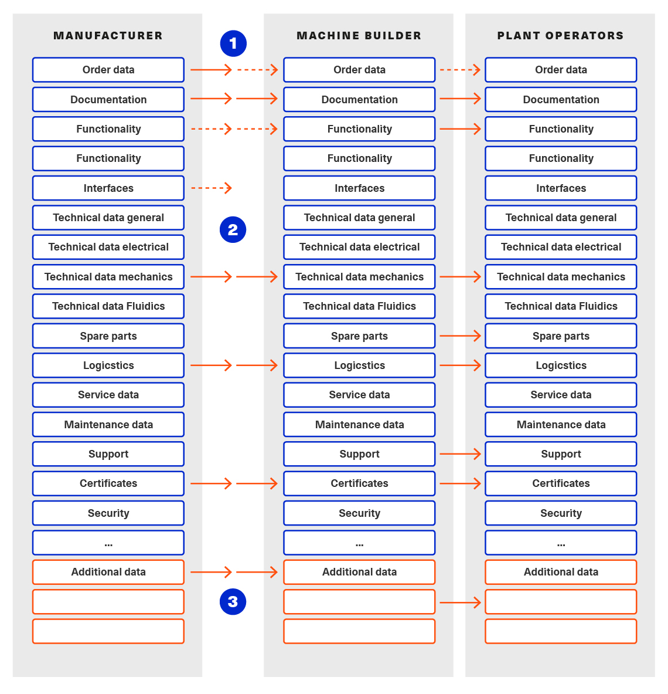

1. Preamble
1.1. Editorial Notes
This document (version 3.0) is the continuation of the definition of the AASX Package Exchange Format that was originally part of Part 1 of the document series "Details of the Asset Administration Shell". Part 1 was splitted after V3.0RC02. Part 5 (this document) now focuses on the file exchange format AASX.
This document was produced from September 2022 to January 2023 by the sub working group "Asset Administration Shell" of the joint working group of the Plattform Industrie 4.0 working group "Reference Architectures, Standards and Norms" and the "Open Technology" working group of the Industrial Digital Twin Association (IDTA). It is the first version published by the IDTA.
This specification is versioned using Semantic Versioning 2.0.0 (semver) and follows the semver specification [8].
The key words "MUST", "MUST NOT", "REQUIRED", "SHALL", "SHALL NOT", "SHOULD", "SHOULD NOT", "RECOMMENDED", "NOT RECOMMENDED", "MAY", and "OPTIONAL" in this document are to be interpreted as described in BCP 14 RFC2119 RFC8174[1]:
-
MUST This word, or the terms "REQUIRED" or "SHALL", mean that the definition is an absolute requirement of the specification.
-
MUST NOT This phrase, or the phrase "SHALL NOT", mean that the definition is an absolute prohibition of the specification.
-
SHOULD This word, or the adjective "RECOMMENDED", mean that there may exist valid reasons in particular circumstances to ignore a particular item, but the full implications must be understood and carefully weighed before choosing a different course.
-
SHOULD NOT This phrase, or the phrase "NOT RECOMMENDED", mean that there may exist valid reasons in particular circumstances when the particular behavior is acceptable or even useful, but the full implications should be understood and the case carefully weighed before implementing any behavior described with this label.
-
MAY This word, or the adjective "OPTIONAL", mean that an item is truly optional. One vendor may choose to include the item because a particular marketplace requires it or because the vendor feels that it enhances the product while another vendor may omit the same item. An implementation which does not include a particular option MUST be prepared to interoperate with another implementation which does include the option, though perhaps with reduced functionality. In the same vein, an implementation which does include a particular option MUST be prepared to interoperate with another implementation which does not include the option (except, of course, for the feature the option provides.)
1.2. Scope of this Document
The aim of this document is to define selected specifications of the structure of the Administration Shell to enable the meaningful exchange of information about assets between partners in a value creation network.
This part of the document focuses on how such information needs to be processed and structured. In order to define these specifications, the document formally stipulates some structural principles of the Administration Shell. This part does not describe technical interfaces of the Administration Shell or other systems to exchange information, protocols, or interaction patterns.
This document focuses on:
-
the exchange file format for the transport of information from one partner in the value chain to the next.
This document assumes familiarity with the metamodel of the Asset Administration Shell as described in Part 1 of the document series.
The main stakeholders addressed in this document are architects and software developers aiming to implement a digital twin using the Asset Administration Shell in an interoperable way. Additionally, the content can also be used as input for discussions with international standardization organizations and further collaborations.
Please consult the continuously updated reading guide [11] for an overview of documents on the Asset Administration Shell. The reading guide gives advice on which documents should be read depending on the role of the reader.
1.3. Normative References
[ECMA-376] ECMA-376. Office Open XML file formats. Online]. Available: https://www.ecma-international.org/publications-and-standards/standards/ecma-376/
[ISO/IEC 29500-2] ISO/IEC 29500-2. Document description and processing languages — Office Open XML file formats — Part 2: Open packaging conventions
1.4. Structure of the Document
Clause 2 provides terms and definitions as well as abbreviations, both for abbreviations used in the document and for abbreviations that may be used for elements of the metamodel defined in this document.
Clause 3 gives a short introduction into the content of this document in the context of the Asset Administration Shell.
Clause 4 explains some basic concept and the leading picture guiding the usage of the specified file exchange format.
Clause 5 is the normative part of the document. It specifies how the information of one or more Administration Shells can be packed into a compound file format (AASX). Background information with respect to this format can be found in Annex A.
In general, normative clauses are characterized by adding the prefix (normative) to the title of the clause.
Finally, Clause 6 summarizes the content and gives an outlook on future work.
The Annex contains additional background information on the exchange format (Annex A).
Metamodel changes compared to previous versions are described in Annex B.
The bibliography can be found in Annex C.
2. Terms, Definitions and Abbreviations
2.1. Terms and Definitions
Please note: the definitions of terms are only valid in a certain context. This glossary applies only within the context of this document. For a more extensive list, please refer to Part 1 of the document series.
If available, definitions were taken from IEC 63278-1 DRAFT, July 2022.
access control
protection of system resources against unauthorized access; a process by which use of system resources is regulated according to a security policy and is permitted by only authorized entities (users, programs, processes, or other systems) according to that policy
-
[SOURCE: IEC TS 62443-1-1]
application
software functional element specific to the solution of a problem in industrial-process measurement and control
Note 1 to entry: an application can be distributed among resources and may communicate with other applications.
-
[SOURCE: IEC TR 62390:2005-01, 3.1.2]
asset
physical, digital, or intangible entity that has value to an individual, an organization or a government
Note 1 to entry: an asset can be single entity, a collection of entities, an assembly of entities, or a composition of entities.
EXAMPLE 1: examples for physical entities are equipment, raw material, parts components and pieces, supplies, consumables, physical products, and waste.
EXAMPLE 2: examples for digital assets are process definitions, business procedures, or actual states.
EXAMPLE 3: a software license is an example of an intangible asset.
-
[SOURCE: IEC 63278-1, based on IEV 741-01-04; editorial changes]
Asset Administration Shell (AAS)
standardized digital representation of an asset
Note 1 to entry: Asset Administration Shell and Administration Shell are used synonymously.
-
[SOURCE: IEC 63278-1, note added]
digital representation
information and services representing an entity from a given viewpoint
EXAMPLE 1: examples of information are properties (e.g. maximum temperature), actual parameters (e.g. actual velocity), events (e.g. notification of status change), schematics (electrical), and visualization information (2D and 3D drawings).
EXAMPLE 2: examples of services are providing the history of the configuration data, providing the actual velocity, and providing a simulation.
EXAMPLE 3: examples of viewpoints are mechanical, electrical, or commercial characteristics.
-
[SOURCE: IEC 63278-1; editorial changes]
identifier (ID)
identity information that unambiguously distinguishes one entity from another one in a given domain
Note 1 to entry: there are specific identifiers, e.g. UUID Universal unique identifier, IEC 15418 (GS1).
-
[SOURCE: Glossary Industrie 4.0]
Submodel
container of SubmodelElements defining a hierarchical structure consisting of SubmodelElements
-
[SOURCE: IEC 63278-1]
system
interacting, interrelated, or interdependent elements forming a complex whole
-
[SOURCE: IEC 63278-1; IEC TS 62443-1-1:2009, 3.2.123]
2.2. Abbreviations
Note: not all abbreviations are used in this document. The list of abbreviations is identical in the different parts of the document series "Details of the Asset Administration Shell".[2]
| Abbreviation | Description |
|---|---|
AAS |
Asset Administration Shell |
AASX |
Package file format for the Asset Administration Shell |
AML |
AutomationML |
API |
Application Programming Interface |
BITKOM |
Bundesverband Informationswirtschaft, Telekommunikation und neue Medien e. V. |
BLOB |
Binary Large Object |
CDD |
Common Data Dictionary |
GUID |
Globally unique identifier |
I4.0 |
Industrie 4.0 |
ID |
Identifier |
IDTA |
Industrial Digital Twin Association |
IEC |
International Electrotechnical Commission |
IRDI |
International Registration Data Identifier |
IRI |
Internationalized Resource Identifier |
ISO |
International Organization for Standardization |
JSON |
JavaScript Object Notation |
MIME |
Multipurpose Internet Mail Extensions |
OPC |
Open Packaging Conventions (ECMA-376, ISO/IEC 29500-2) |
OPC UA |
OPC Unified Architecture |
Portable Document Format |
|
RAMI4.0 |
Reference Architecture Model Industrie 4.0 |
RDF |
Resource Description Framework |
REST |
Representational State Transfer |
RFC |
Request for Comment |
UML |
Unified Modeling Language |
URI |
Uniform Resource Identifier |
URL |
Uniform Resource Locator |
URN |
Uniform Resource Name |
UTC |
Universal Time Coordinated |
VDE |
Verband der Elektrotechnik, Elektronik und Informationstechnik e.V. |
VDI |
Verein Deutscher Ingenieure e.V. |
VDMA |
Verband Deutscher Maschinen- und Anlagenbau e.V. |
W3C |
World Wide Web Consortium |
XML |
eXtensible Markup Language |
ZIP |
archive file format that supports lossless data compression |
ZVEI |
Zentralverband Elektrotechnik- und Elektronikindustrie e. V. |
3. Introduction
The document series "Details of the Asset Administration Shell" specifies the different needs of implementing Asset Administration Shells in an Industry 4.0 environment. A corresponding IEC series is in development, see [13].
Besides a technology-neutral specification of the information model in UML, several different formats are provided to exchange Asset Administration Shells: XML, JSON, RDF, AutomationML, as well as an OPC UA information model.
Figure 1 shows the different ways of exchanging information via Asset Administration Shells. This part of the "Details of the Asset Administration Shell" series, Part 5, deals with type 1: file exchange. The following steps need to be executed to enable an exchange between partners:
-
definition of the Asset Administration Shell in a selected format, for example XML (see [9]),
-
selecting the additional files that are referenced in submodels of the Asset Administration Shell and should also be exchanged,
-
provision of the Asset Administration Shell together with the selected files in a standardized exchange format, the AASX package format as specified in this document,
-
defining a secure way to exchange the file, for example via secure file download on a web server [12].
4. Basic Concepts and Leading Picture
4.1. Leading Picture
The leading use case in this document is the exchange of an Asset Administration Shell including all its auxiliary documents and artifacts from one value chain partner to another. This document does not deal with the use case of already deployed Asset Administration Shells running in a specific infrastructure, but only with the file exchange between partners.
Figure 2 shows the overall picture. It depicts two value chain partners. "Supplier" is going to provide some products, "Integrator" is going to utilize these products to build a machine. Two kinds of Administration Shells are provided: one for the asset with the type of a product (A1, B1 and C1 for the machine), one for the assets with the actual product instances (D1 and D4). The aim is to provide engineering information to the integrator that can be imported into the integrator’s engineering system.
The Asset Administration Shells are not necessarily exported "as is". Instead, some filtering depending on the access and usage policies can be applied before export (see Clause 4.2. The same can happen on the integrator’s side. Not all provided information will necessarily be imported. This is why packages A2 and A3 are distinguished from the original A1 Asset Administration Shell for the product type. The same accounts for B1 and D1. D4 is the composite instance of product type C1.
In Figure 3, it is assumed that import does not need additional filtering.
"Supplier" and "Integrator" form two independent legal bodies (Figure 3). The organizational boundaries as well as the system boundaries including the partners’ infrastructures must be taken into account for data exchange, file exchange being one form of data exchange.
The exchange of files needs to fulfil some requirements with respect to usability and security [12]. A bilateral agreement on security constraints is required, which must be fulfilled for the transfer and usage of the files. Please refer to Part 4 of the series "Details of the Asset Administration Shell" for more details.
For usability sake, a container format is used for file exchange and a corresponding structure is defined. This predefined structure helps the consumer to understand the content of the single files. The container may contain auxiliary files referenced by the AAS or even executable code.
4.2. Filtering of Information in Export and Import
When exchanging information from partner A to partner B, two use cases may apply.
-
The producer of information only wants to submit certain parts of the information. The information might vary depending on the specific consumer it is submitted to. This requires a filtering mechanism, which allows to individually shape the information for the specific consumer.
-
The consumer of information does not want to include all information provided by the producer in his own process, i.e. he wants to filter only the relevant information.
Figure 4. Example Filtering for Export and Import
As an example (see Figure 4), let’s assume that the producer is submitting the complete order data. However, the consumer (in this case the machine builder) is filtering the information (1) and is only importing the information relevant to him. Regarding the functionality, both are filtering: the producer is filtering what he submits to the consumer (2) and the consumer in turn is not using all functionality but is filtering the functionality he wants to use in his environment. The same is possible between machine builders and operators.
Note: in the use case described above, (i.e. the exchange of information via sharing of xml files, etc.), the information that is not intended for submission needs to be extracted from the corresponding xml files before delivery or before import, respectively. Role or attribute-based access control does not fit this use case. The corresponding access policies might help filtering the corresponding information, but they cannot be submitted as part of the file exchanged.
Figure 4 shows an example, where the defined xml format is used as defined in this document. The German translation shall not be submitted, only English language is provided to partner B.
4.3. Basic Concepts of the Open Packaging Conventions
The packaging model specified by the Open Packaging Conventions describes packages, parts, and relationships. Packages hold parts, which hold content and resources, such as *files*[3]. Every file in a package has a unique URI-compliant file name along with a specified content-type expressed in the form of a MIME media type.
Relationships are defined to connect the package to files, and to connect various files in the package. The definition of the relationships (along with the files’ names) is the logical model of the package. The resource, i.e. a source of a relationship, must be either the package itself or a data component (file) inside of the package. The target resource of a relationship can be any URI-addressable resource inside or outside of the package. It is possible to have more than one relationship that share the same target file (see example 9–6 in ISO/IEC 29500-2: 2012).
5. Package File Format for the Asset Administration Shell (AASX) (normative)
5.1. General
Some use cases make it necessary to exchange the full or partial structure of the Asset Administration Shell with or without associated values and/or to make the information persistent (e.g. store it on a file server). In this case, a file format must be defined that can hold and store this information. Therefore, a package file format for the Asset Administration Shell (AASX) is defined based on the following requirements:
-
generic package file format to include the Asset Administration Shell structure, data, and other related files,
-
main use cases are the exchange between organizations/partners and storage/persistency of the Asset Administration Shells’ information,
-
the package format shall be usable by everyone without any legal restrictions or royalties; the format should preferably be based on an international standard with high guarantees of future maintainability,
-
existence of APIs to create, read, and write packages of this format,
-
provision of digital signatures and encryption capabilities,
-
policies for authenticity and integration of package files[4].
The following process in Figure 6 is defined for creating and consuming AASX packages.
The process starts by serializing the existing AAS (e.g. D1 and E1) into files (according to the serialization mechanisms described in this document), as well as exporting other supplementary files (i.e. files mentioned in the structure of the AAS, such as manuals, CAD files, etc.). All these files will be packaged together into the AASX ZIP file format and will be followed by several security steps that define the policies for modifiability, encryption, and digital signing of the files inside the AASX. The final AASX can then be transported from the AASX producer (in this case partner A) to the AASX consumer (partner B) via digital media such as e-mail, USB stick, etc. The consumer first needs to validate and verify the incoming AASX, unpack the contained files, and import them to generate the new AAS in the consumer environment. The process will be explained in detail in the following sub-sections.
5.2. Conventions for the Asset Administration Shell Package File Format (AASX)
The Asset Administration Shell Package (AASX) format is derived from the Open Package Conventions standards, consequently inheriting its characteristics. Nevertheless, some conventions are defined for the AASX:
-
package format and rules according to ISO/IEC 29500-2:2012; any derivate format from this standard (such as the AASX format) requires the definition of a logical model, a physical model, and a security model; the specific conventions are described in the next subsections.
-
file extension for the AASX format .aasx,
-
MIME-type for the AASX format: application/asset-administration-shell-package[5],
-
icon for the AASX[6],
-
identification of the AASX format by the file extension and content (MIME) type, which can be identified content-wise when reading the first relationship file /_rels/.rels (as defined in Open Packaging Conventions) and looking for a relationship type http://admin-shell.io/aasx/relationships/aasx-origin (which is the entry point for the logical model of the Asset Administration Shell),
-
note that the following paths and filenames in the package are already reserved by the Open Packaging Conventions specification and shall therefore not be used for any derivative format: /[Content_Types].xml; /rels/.rels; /<file_path>_/rels/<filename>_.rels (where <filename> is a file in the package that is source of relationships and <file_path> is the path to that file),
-
the AASX format does not have to be opened in any existing Office Open XML / Open Packaging Conventions compatible Office application (e.g. Microsoft Office, LibreOffice), because the required relationships and files for the different office "models" may not be present (e.g. http://schemas.openxmlformats.org/officeDocument/2006/relationships/officeDocument for "docx" document).
5.3. ECMA-376 Relationships
Figure 7 defines a set of relationship types (URIs) and the corresponding source files as a part of the logical model for the AASX format. In addition (not shown in Figure 7), a specific relationship instance also has a unique ID and a target resource (URI of a target file inside or outside of the package).
The relationship types for thumbnail, core-properties, digital-signatures (origin, signature and certificate) are defined by Open Packaging Conventions. The other relationship types were specifically defined to support the AASX package format.
The following name spaces are defined:
| Namespace | Value |
|---|---|
<rel> |
|
<rel_aas> |
Each relationship type[7] as denoted in Figure 7 is described in the following.
Relationship Type |
|
|---|---|
Source File of Relationship Type: |
-- |
Namespace: |
<rel> |
| Relationship Type | Card. | Description |
|---|---|---|
metadata/thumbnail |
0..1 |
Required to define a thumbnail for that package (e.g. picture of the administrated device). The thumbnail picture can be shown instead of the package’s icon based on the extension and/or content type. |
metadata/core-properties |
0..1 |
There is a schema for describing the package through "core properties," which uses selected Dublin Core metadata elements in addition to some Open Packaging Conventions-specific elements. The core properties do not describe the Administration Shell, but the package itself. Some elements of the core properties may be similar/equal to elements of the Administration Shell. Some core properties are: Title, Subject, Creator, Keywords, Description, LastModifiedBy, Revision, LastPrinted, Created, Modified, Category, Identifier, ContentType, Language, Version, ContentStatus. |
digital-signature/origin |
0..1 |
Required if you need to sign files and relationships inside the package. Their relationships basically target files that contain the data on signatures (e.g. certificate, digests, etc.). Note: see Clause 5.5 on digital signatures for more information. |
aasx-origin |
1 |
This relationship targets an aasx origin file which shall be an empty file or a plain text file containing the text "Intentionally empty"[8]. It is the entry point for all aas specific relationships and files inside the package. The source of the aasx origin relationship must be the package root.
8. This will allow extensions of the AASX package format in future versions of this specification.
|
Relationship Type |
|
|---|---|
Source File of Relationship Type: |
<rel>/digital-signature/origin |
Namespace: |
<rel> |
| Relationship Type | Card. | Description |
|---|---|---|
digital-signature/signature |
1..* |
Required if you need to sign files and relationships inside the package. Their relationships basically target files that contain the data on signatures (e.g. certificate, digests, …). Note: see Clause 5.5 on digital signatures for more information. |
Relationship Type |
|
|---|---|
Source File of Relationship Type: |
<rel>/digital-signature/signature |
Namespace: |
<rel> |
| Relationship Type | Card. | Description |
|---|---|---|
digital-signature/certificate |
0..1 |
Required if you need to sign files and relationships inside the package. Their relationships basically target files that contain the data on signatures (e.g. certificate, digests, …). Note: see Clause 5.5 on digital signatures for more information. |
Relationship Type |
|
|---|---|
Source File of Relationship Type: |
<rel_aas>/aasx-origin |
Namespace: |
<rel_aas> |
| Relationship Type | Mandatory | Description |
|---|---|---|
aas-spec |
1..* |
Targets the file that contains the structure/specification of one or more identifiable elements (such as AAS, Submodel or ConceptDescription). Different formats of the same information can be contained in the container. Typical formats contained are XML and/or JSON. |
Relationship Type |
|
|---|---|
Source File of Relationship Type: |
<rel_aas>/aas-spec |
Namespace: |
<rel_aas> |
| Relationship Type | Mandatory | Description |
|---|---|---|
aas-suppl |
0..1 |
Targets any additional file, which is referenced from within the data of an AAS via a relative URI reference in the File submodel element. Note 1: blobs as defined via submodel Element Blob are not stored as supplemental files within the package. Note 2: not every File element inside the specification of an Submodel may target a file stored within the same AASX package. Only a relative URI reference shall be interpreted as a reference to a supplementary file within the AASX package. The path within the .rels file of the Open Package Conventions container can be a relative or absolute Open Package Conventions path. The source of any aasx-suppl relationship must be the file containing the AAS structure/specification. If the information is available in several formats, the relationships need to be defined for each of the files. |
5.4. File Name Conventions
Using the ECMA-376 relationships (see Clause 0) allows to locate files within the AASX package independently from the file name. For example, one package producer might store an aas-spec file in /aasx/device.xml, the other one in /asset-admin-shell/productX123.xml, but both use the same relationship type to target that file. To have a more consistent approach, the following conventions are defined for naming files inside the AASX package:
-
/aasx/ shall be the common prefix for all files containing AASX package specific information,
-
/aasx/aasx-origin shall be the target of the aasx-origin relationship without content (empty file),
-
/aasx/data.<extension> shall be the target of the aas-spec relationship, where <extension> is "xml" or "json", based on the type of serialization,
-
a serialization of the same data in both serialization formats (xml, json) stored in the same AASX package might also exist; they can be stored in parallel using the aforementioned extensions and appropriate ECMA-376 Content Types (MIME type) and require the creation of the appropriate aas-suppl relationships for both of these files, targeting the supplementary files.
Figure 9 shows the overall physical model, i.e. the file structure of an AASX package. The folder "suppl" is empty in this example or not shown. The corresponding files contained in the folder "suppl" would be referenced in the data.xml.rels and data.json.rels files. The file "Thumbnail.png" is referenced in file ".rels" as target for relationship with type "metadata/thumbnail".
Figure 8 shows an example of an AASX package focusing on the specific aasx part including AAS examples. It depicts the content of the AASX package listed in a tree view using the ECMA-376 relationship types defined in Figure 7 and follows the file name conventions as defined above. In this example, it is assumed that the AAS specification files are serialized in XML. The data.xml file in this example contains two Asset Administration Shells, two submodels, and a single concept description. Three files are referenced within the submodels; they are added to the package in the folder suppl. The files can be referenced from both AAS, i.e. from both submodels. The same accounts for the concept description that can be used in both submodels. The submodels can be part of both AAS, if needed.
In addition to the AASX specific files, files common to all ECMA-376 packages – such as relationship parts (*.rels) and the Content Types stream ([Content_Types].xml) – must be contained in an AASX package in its physical representation as a .zip archive. For more information on these files, please refer to the ECMA-376 specification.
5.5. Digital Signatures
A digital signing feature is already provided by the Open Packaging Conventions specification [4]. Hence, this signing framework for packages can also be used for AASX packages. To ensure the integrity of the AAS data, all relevant files within the package (aasx-origin file, AAS structure specification file, supplementary files) and the associated relationship parts shall be signed.
5.6. Encryption
The Open Packaging Conventions specification (ISO/IEC 29500-2:2012) mentions that "ZIP-based packages shall not include encryption as described in the ZIP specification. Package implementers shall enforce this restriction [M3.9]"[9]. However, an Open Packaging Conventions package may be encrypted with other means and some applications, which use this package format as the basis for a more specific format, may use encryption during interchange or DRM for distribution [1].
An example is the Office Document Cryptography Structure (MS-OFFCRYPTO) used by derivate office formats. Some technologies used may be covered by patents from Microsoft and are therefore not recommended for the AASX format. Digital Rights Management (DRM) can also be used to encrypt content elements in a package with specific access rights granted to authorize users (see the implementation in the system.io.packaging namespace [7]).
Regarding encryption and confidentiality, the following rules shall be followed.
-
Decide if there is a need to include confidential content in a package; if there is no need, it shall not be included.
-
If encryption is desired for a temporary communication act (e.g. e-mail exchange, etc.) or if an AASX needs to be stored somewhere to be opened later by the same entity, then encryption methods can be used for that specific means (e.g. use BitLocker when storing the AASX in Windows-based systems that support it, use S/MIME for exchanging encrypted e-mails between entities, etc.).
-
For all other use cases[10] where encryption is required for some or all of the content of the AASX, the following applies.
-
Encryption methods can be used for individual files in the AASX package, if the "encrypted" version replaces the original file in the package, the content type of the encryption format is known, and the content type is listed in the [Content-Type].xml. The relationships as defined in this document remain the same, whether content is encrypted or not. Note that Open Packaging Conventions related files as well as relationship files shall not be encrypted, and digital signing must be performed after encryption. One example of an encryption standard is the Secure MIME (S/MIME), where the encrypted content should be stored in application/pkcs7-mime format as defined in RFC 5652 and the file extension *.p7m should be used.
-
Besides encrypting the content of the package (individual files), it is possible to encrypt the full package (e.g. also using Secure MIME and saving the encrypted package in application/pkcs7-mime file format). In this case, signing of the content of the package must be done before encryption.
-
6. Summary and Outlook
This document (Part 5 of the document series "Details of the Asset Administration Shell") defines the AASX package file format for file exchange of Administration Shells based on the Open Package Conventions.
Additional parts of the document series cover (see [10]):
-
the information meta model of the Asset Administration Shell (Part 1),
-
interfaces and APIs for accessing the information of Asset Administration Shells (access, modify, query, and execute information and active functionality; Part 2),
-
the payload of these APIs is based on the definitions of the information model as specified in document Part 1; the API also includes operations for downloading AASX files as specified in this document,
-
data specification templates (Part 3 series),
-
security aspects of the Asset Administration Shell (Part 4)
Appendix A: Background Information
A.1. Selection of the Reference Format for the Asset Administration Shell Package Format
The Open Packaging Conventions[11] format is used as the reference for the Asset Administration Shell package format definition, due to the following reasons.
-
Open Packaging Conventions is an international standard specified in ISO/IEC 29500-2:2012 and ECMA-376.
-
Open Packaging Conventions is based on ZIP (as a package container) and XML (for the description of some internal files and definitions). These two technologies are most widely used in their respective domains and are also addressed for long-term archiving.
-
Open Packaging Conventions can be used as package for non-Office applications, too (there are many examples available, such as NuGet, FDI packages, etc.). It provides a logical model independent from how the files are stored in the package. This logical model can be expanded to any sort of application.
-
Open Packaging Conventions is also used in the scope of Industry (e.g. FDI packages) and currently in discussion as possible container format for some FDT® and ODVA Project xDS™ use cases.
-
Open Packaging Conventions (and Open Document Format packages) supports digital signing. It can be done for individual files inside of the package. Encryption is not specified in Open Packaging Conventions (it only mentions what shall not be done). Nevertheless, encryption is possible (see points).
-
There are some APIs to handle Open Packaging Conventions packages (Windows API, .NET, Java, etc.) that do not require much knowledge on the technical specification.
-
Open Packaging Conventions encourages chunking, i.e. splitting files into small chunks. This is favorable for reducing the effect of file corruption and better for data access.
-
Some international organizations (e.g. EU, NATO, etc.) recommend using Open Document Format (ISO/IEC 26300-3) instead. However, this recommendation is related to the formats used specifically in Office applications.
-
The Office Open XML and Open Packaging Conventions specifications originated from the Microsoft Corporation and were later standardized as ISO/IEC 29500 and ECMA-376. Current and future versions of ISO/IEC 29500 and ECMA-376 are covered by Microsoft’s Open Specification Promise, whereby Microsoft "irrevocably promises" not to assert any claims against those making, using, and selling conforming implementations of any specification covered by the promise (so long as those accepting the promise refrain from suing Microsoft for patent infringement in relation to Microsoft’s implementation of the covered specification) [1].
-
Office Open XML (including the Open Packaging Conventions format) and Open Document Format are politically conflicting formats (see details in [2] and [3]). Choosing Open Packaging Conventions as the option for storing the Asset Administration Shell information had only technical reasons based on the arguments mentioned here.
-
Open Packaging Conventions was chosen in favor of iiRDS (v1.0). The scope of iiRDS might not be aligned with the requirements of the Asset Administration Shell, i.e. iiRDS is mainly a format for storing technical documentation of industry devices based on ontology concepts.
Appendix B: Changes
B.1. General
This annex lists the changes from version to version of the file exchange format together with major changes in the overall document. Non-backward compatible changes (nc) are marked as such.
B.2. Changes Part 5 V3.0 vs. Part 1 V2.0.1
Major changes:
-
CHANGE: document Part 1 split into several separate documents: Part 1 on the metamodel of the AAS, Part 5 on the aasx package exchange format (this document), and others
-
CHANGE: simplified, only one data file (but in different formats, if needed, e.g. data.xml and data.json) and 0..* supplementary files (as referenced in the data file) allowed; one data file may contain several Asset Administration Shells
-
CHANGE: splitting of an Asset Administration Shell is no longer allowed (i.e. relationship type aas-spec-split removed)
-
CHANGE: predefined recommended name "data" for the data file (aasx/aas-spec); the suffix "aas." (i.e. data.aas.xml) is no longer required (now just data.xml) because splitting of files is no longer allowed
-
CHANGE: clause on digital signatures shortened; description of how to sign and what to consider when signing AASX files or content no longer available
Minor changes:
-
Update xml examples to follow new version of xml schema
Bibliography
[1] "Sustainability of Digital Formats: Planning for Library of Congress Collections. Open Packaging Conventions (Office Open XML)", ISO 29500-2:2008-2012, 2012. [Online]. Available: https://www.loc.gov/preservation/digital/formats/fdd/fdd000363.shtml
[2] "Standardization of Office Open XML", Wikipedia. Accessed: 2019-01-26 [Online]. Available: https://en.wikipedia.org/wiki/Standardization_of_Office_Open_XML
[3] "OpenDocument standardization", Wikipedia. Accessed: 2019-01-26 [Online]. Available: https://en.wikipedia.org/wiki/OpenDocument_standardization
[4] "The Digital Signing Framework of the Open Packaging Conventions". Accessed: 2019-01-26. [Online]. Available: https://msdn.microsoft.com/en-us/library/aa905326.aspx
[5] "Open Packaging Conventions Fundamentals". Accessed: 2019-01-26 [Online]. Available: https://msdn.microsoft.com/en-us/library/windows/desktop/dd742818(v=vs.85).aspx
[6] "Sustainability of Digital Formats: Planning for Library of Congress Collections. Document Container File: Core (based on ZIP 6.3.3)". Accessed: 2019-01-26. [Online]. Available: https://www.loc.gov/preservation/digital/formats/fdd/fdd000361.shtml
[7] "System.IO.Packaging Namespace", MSDN, Accessed: 2019-01-26 [Online]. Available: https://msdn.microsoft.com/en-us/library/system.io.packaging(v=vs.110).aspx
[8] T. Preston-Werner "Semantic Versioning". Version 2.0.0. Accessed: 2020-11-13. [Online]. Available: https://semver.org/spec/v2.0.0.html
[9] "Details of the Asset Administration Shell – The exchange of information between partners in the value chain of Industrie 4.0". [Online]. Available: https://industrialdigitaltwin.org/en/content-hub
[10] "Details of the Asset Administration Shell – Interoperability at Runtime – Exchanging Information via Application Programming Interfaces". [Online]. Available: https://industrialdigitaltwin.org/en/content-hub
[11] "Asset Administration Shell. Reading Guide". Plattform Industrie 4.0 in cooperation with IDTA. November 2020. [Online]. Available: https://industrialdigitaltwin.org/wp-content/uploads/2022/02/AAS-ReadingGuide_202201.pdf
[12] "Secure Download Service", Discussion Paper. Oct. 2020, Plattform Industrie 4.0. [Online]. Available: https://www.plattform-i40.de/PI40/Redaktion/EN/Downloads/Publikation/secure_downloadservice.html
[13] IEC 63278-1 "Asset Administration Shell for industrial applications – Part 1: Asset Administration Shell structure". 95/925/CDV